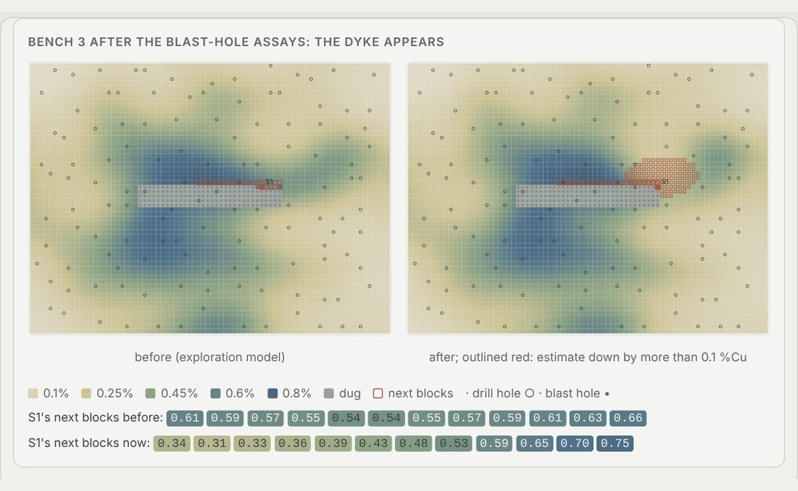
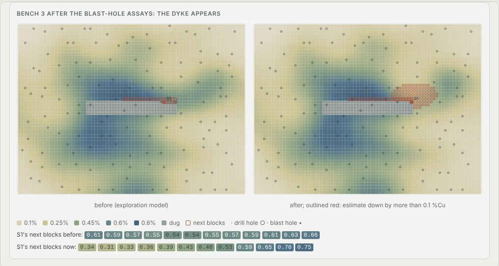
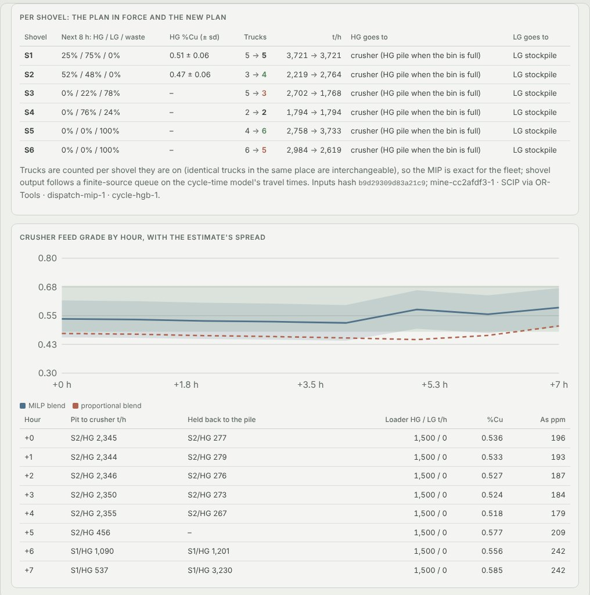
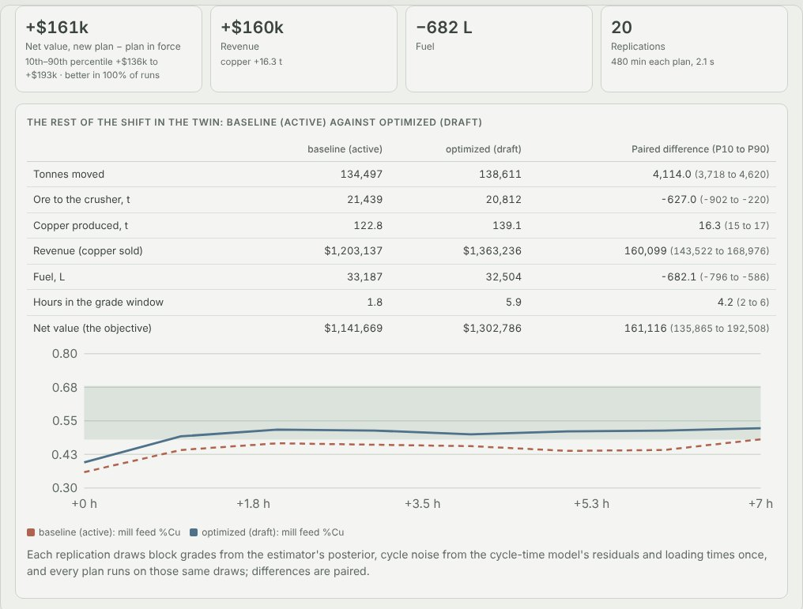
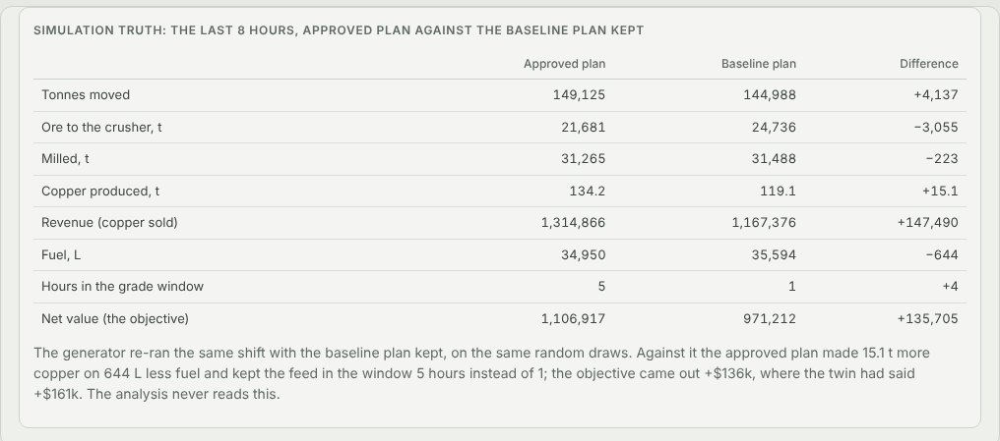

Python · Kriging · Mixed-integer optimisation · 2026-10
Where Should the Trucks Go When the Ore Runs Thin?
Short-interval control for an invented copper mine: a barren dyke and three truck breakdowns hit the shift, blast-hole assays reveal the dyke, engine models flag two of the failures an hour ahead, the dispatch MIP re-plans 25 trucks in 37 ms, a blend schedule holds the mill feed in the grade window, and a second person approves a plan that then made 15.1 t more copper on 644 L less fuel, $136k ahead of the baseline plan on the same shift.

Built from a written blueprint as one vertical slice. The mine is simulated: the orebody, assays, trucks, engines, crusher and mill come from a generator in the repository, and the demo's dyke and breakdowns are injected by telling the generator about them, which is what lets every estimate, alarm and plan be checked against the truth. The twin is the service's own model; the generator then shows what really happened. No real mine data. Not built: conditional simulation of grades, per-truck real-time dispatch (measured, and worse), PostGIS, CesiumJS, Kafka, TimescaleDB, Gurobi, Kubernetes, single sign-on.
01 — The problem
An open-pit mine plans its shift on a block model built from drill holes 60 m apart, then the ground and the fleet disagree: a blast turns out barren where the holes missed it, trucks break down, and the crusher feed drifts out of the grade window the concentrator needs. The dispatcher's usual answer, trucks split by what each shovel needs and ore routed at the cut-offs, does not re-think where the ore should go or what to reclaim, and the evidence that would help (assays, engine data, cycle times) arrives in different systems at different times. Can software estimate the orebody with honest uncertainty, warn about failing engines before they stop, re-plan haulage and the blend in seconds, show what the new plan would do against the old one on the same shift, and change nothing until a second person agrees?
Blueprint 6 of twenty in a fourth build book, built as its demo scenario end to end.
02 — What I built
A Python service on PostgreSQL with a background worker and a web page, started by one docker compose up.
- A simulated mine: 28,800 blocks with spatially correlated grade, arsenic and hardness; drill and blast-hole assays with lab error; six shovels, 28 trucks whose cycles follow power, grade, payload, wet roads and queues; a crusher, surge bin, mill and two stockpiles; engine telemetry with failure precursors.
- Kriging of every block with its 80% interval, re-conditioned as blast-hole assays arrive, and ore control from it.
- A cycle-time model, a fuel model, engine anomaly detection per truck and a mill throughput forecast.
- A dispatch MIP and an hourly blend MILP on OR-Tools, each beside plain baselines.
- A twin that re-runs the rest of the shift under two plans on the same random draws, and a plan dispatched only when a second person approves.
03 — How it was built
- 01
A mine whose surprises are physical
Grades are smoothed random fields with a richer core and a nugget no hole sees. A truck's speed on the ramp comes from its power, its payload and the rolling resistance, so cycle times depend on the bench, the road and the queue at the shovel and the crusher. The demo's dyke multiplies the true grade by 0.3 within 45 m of the start of S1's next blast, between drill holes; the lab returns that blast's assays 150 minutes into the shift. Every random draw is keyed by truck and cycle, so the same shift can be re-run under another plan.
v = cap / 3.6 if resist <= 0.004 else min(cap / 3.6, POWER_KW * 1000 * 0.85 * eff / (gross_t * 1000 * 9.81 * resist)) minutes = L / v / 60 + (0.35 if kind == "bench" else 0.25) # acceleration and corners - 02
Grade with its uncertainty
Log-grade is kriged in 3D with each sample's laboratory error as its own noise; new assays condition the fitted model without refitting it. On three held-out mines kriging put 11.0-11.5% of blocks in the wrong class at the cut-offs against 14.3-16.7% for inverse distance and 18.9-21.3% for the nearest hole, and its 80% interval held 85-89% of the true grades. In the demo the 72 blast-hole assays took S1's next blocks from 0.54-0.66 to 0.31-0.53 %Cu.
self.gps[var] = GaussianProcessRegressor(self.kernels[var], alpha=alpha / sd ** 2, optimizer=None, normalize_y=True).fit(X, ys) - 03
Engines against their own normal
Each truck's coolant, oil pressure and exhaust are modelled on its duty and the air temperature, learned only from windows at least four hours before any breakdown; an alert needs two windows in a row 4 sd off in the harmful direction. On held-out mines it caught 100 of 100 precursor failures a median 60-64 minutes ahead with 0.58-1.72 false alarms per 1,000 truck-hours; the manufacturer's thresholds caught 64, 18-32 minutes ahead, with 25.5-31.4. In the demo T16's coolant alert came 80 minutes before it stopped; the tyre gave no warning.
z = {s: sign * (w[s] - float(np.dot(m[s][0], x))) / m[s][1] for s, sign in SENSORS} run[tid] = run.get(tid, 0) + 1 if hit else 0 fire = run[tid] >= PERSIST - 04
Dispatch as a mixed-integer programme
Trucks are counted per shovel they are on, which is exact because trucks in the same place are interchangeable; each shovel's output follows a finite-source queue on the cycle-time model's travel times (MAPE 4.29-4.93% against 9.82-12.0% for the physics baseline); each shovel's ore goes to the crusher or a stockpile; the grade window and arsenic limit hold at estimate ± z sd; stripping is held at the rate the plan in force would manage. 20 shovels and 200 trucks solve in 0.09 s.
for k in range(len(cv) - 1): # the queueing curve, as lines solver.Add(p[sid] <= cv[k] + (cv[k + 1] - cv[k]) * (n[sid] - k)) - 05
The blend, hour by hour
The loader reclaims in 50 t loads, at least 300 t/h when it works a pile, and the pit feed can be held back to its stockpile, so every hour's crusher feed sits in the 0.48-0.68 %Cu window under the arsenic limit. In the demo the schedule kept the mean feed inside the window in 8 of 8 hours, against 1 of 8 for reclaiming in proportion to the piles.
solver.Add(r >= min_tph * w) # a loader on a pile moves at least 300 t/h blo.append((st["cu"] - z * st["cu_sd"] - lo) * r) # the window, at the estimate's spread - 06
The twin, then a second person
The twin replays the remaining eight hours 20 times under each plan with the same block grades, cycle noise and loading times. It put the new plan at +$161k (10th to 90th percentile +$136k to +$193k), with 16.3 t more copper and 682 L less fuel. The engineer proposed it with that evidence, was refused approval of their own proposal, and the shift supervisor approved it. The generator then played the shift out both ways: +$136k.
if d["proposed_by"] == ctx.actor_id: raise Problem(403, "proposer_cannot_approve", "a dispatch plan needs a second person")
04 — Results
The demo. The blast-hole assays reveal the dyke under shovel S1:

Four hours on the plan in force took the mill feed from 0.55 to 0.32 %Cu; T16's coolant alert came 80 minutes before it stopped and T22's oil-pressure alert 60 minutes before; the tyre on T07 gave no warning.
The re-plan and the blend:

The twin's comparison, and what then happened:


On three held-out mines (six disrupted shifts and three calm ones, eight hours after re-planning, played out by the generator):
| System | Baseline | |
|---|---|---|
| Blocks in the wrong class | 11.0–11.5% | 14.3–16.7% inverse distance |
| Truck cycle time, MAPE | 4.29–4.93% | 9.82–12.0% physics |
| Engine precursor failures caught | 100 of 100 | 64 of 100 thresholds |
| False engine alarms per 1,000 truck-hours | 0.58–1.72 | 25.5–31.4 |
| Mill throughput error, t/h | 119–365 | 357–693 trailing mean |
| Net value per disrupted shift vs the plan kept | +$107k, 5 of 6 | +$57k re-plan heuristic |
| Hours in the grade window, of 8 | 6.3 | 3.7 same plan, proportional reclaim |
| Dispatch solve, 200 trucks | 0.09 s |
Honest limits. Against the re-plan heuristic directly the optimiser wins by $50k a shift on average but in only 3 of 6 disrupted shifts. The demo's shift is one of the better ones and a fragile one: with the solver stopped at a 0.1% gap instead of 0.5%, an equally optimal plan for the same shift came out $31k behind, so the model's objective is far less precise than the solver's gap. Most of the gain is the blend, and its confidence margin bought little over a mean-only blend. The twin was within $60k of the outcome on seven of nine shifts and optimistic on the rest. The stockpile is valued at 75% of milling now and stripping is held at the old plan's rate; both are policies the result depends on.
Checks. 12 tests, including: a re-run under the same plan is identical and a plan change leaves the past untouched, the dyke changes only its bench, kriging beats inverse distance and a blast-hole result pulls its block towards it, the engine detector warns before a cooling failure and stays quiet for a tyre, the MIP respects trucks, queueing curves, mill capacity and the loader, the blend reclaims in whole loads inside the window, the twin finds no difference between a plan and itself, a malformed or duplicate telemetry record is refused with its reason, a proposer cannot approve, and one mine cannot see another's blocks. The Docker stack was run end to end.
05 — What I'd do next
- Conditional simulation of grades, so the twin and the blend see correlated grade risk rather than independent blocks.
- A multi-shift horizon, so stripping and stockpile drawdown are traded against next week rather than fixed by policy.
- Calibrating the twin against outcomes shift by shift, since its optimism is measurable and therefore correctable.